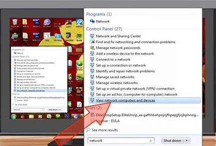

Setting Up and Adding a Scanner to a Networked Computer Using Windows 7
Steps:
1. Open the Start menu and select "Control Panel."

2. Type "network" in the search box. Click on "View network computers and devices" under "Network and Sharing Center."
3. Find the scanner in the list of devices, right-click it, then select "Install.
4. Follow the on-screen instructions to finish adding the scanner.